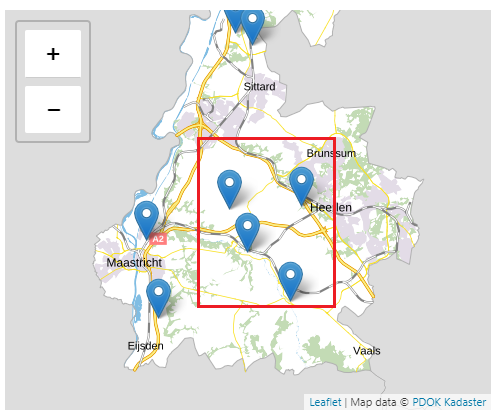

Creative Commons Attribution 4.0 International Public License (CC-BY)
Abstract
The API strategy consists of a core — a generic set of rules for all government APIs — and various modules that only pertain to a specific application. See API Strategie for a list of all parts of the API Strategy.
This document describes the Geospatial module, containing rules for geospatial content and functions in APIs.
Status of This Document
This section describes the status of this document at the time of its publication. Other documents may supersede this document. A list of current Geonovum publications and the latest revision of this document can be found via https://www.geonovum.nl/geo-standaarden/alle-standaarden(in Dutch).
Dit is een werkversie die op elk moment kan worden gewijzigd, verwijderd of vervangen door andere documenten. Het is geen door de werkgroep goedgekeurde consultatieversie.
In dit document zijn wijzigingen naar aanleiding van een deel van de consultatiereacties doorgevoerd. Nog niet alle consultatiereacties zijn verwerkt.
1. Introduction
This document provides rules for publishing geospatial data using Web APIs. Spatial data is
data that describes anything with spatial extent (i.e. size, shape or position). Spatial data is also known as location information. [sdw-bp]
Geospatial data is more specific in that it is explicitly located relative to the Earth.
Geospatial data is 'special' data in the sense that it typically indicates the location of things using geometry. This geometry allows geospatial functions such as 'find only the things located within this area' but also requires specific ways of handling. There are international regulations and standards for geospatial data that need to be taken into account in certain cases.

Figure 1The red bounding box acts as a filter to find only the castles located within this area
The Geospatial Module provides rules for the structuring of geospatial payloads and for functions in APIs to handle geospatial data.
In the geospatial module the abbreviation RD is used. RD refers to the "Stelsel van de Rijksdriehoeksmeting", this is the equivalent of EPSG code 28992 and EPSG name Amersfoort / RD New.
2. Request and response
Providing requested resources is the essence of any API. This also applies to REST APIs that handle geospatial data. There are, however, some specific aspects when dealing with geospatial data in REST APIs. The most important aspects are described in this chapter:
how to encode geometries in APIs
how to supply a spatial filter in the call (request)
how to return results of a spatial search
When requesting information, for example about cadastral parcels, users do not necessarily require the geometry, even if they used a spatial filter. A name or parcel ID may be sufficient.
Note
2.1 GeoJSON
[rfc7946] describes the GeoJSON format, including a convention for describing 2D geometric objects in CRS84. In the Geospatial module of the API strategy we adopt the GeoJSON conventions for describing geometry objects. The convention is extended to allow alternative projections.
API-GEO-1: Support GeoJSON for geospatial APIs
For representing 2D geometric information in an API, preferably use the convention for describing geometry as defined in the GeoJSON format [rfc7946]. Support GeoJSON as described in OGC API Features Requirements class 8.3 [ogcapi-features-1].
How to test
Request a resource that includes feature content (i.e., coordinates) with response media type of application/geo+json. This must be answered with a 200-response.
Validate that the returned document is a GeoJSON document.
Note
2.2 Call (requests)
A simple spatial filter can be supplied as a bounding box. This is a common way of filtering spatial data and can be supplied as a parameter. We adopt the OGC API Features [ogcapi-features-1] bounding box parameter:
API-GEO-2: Supply a simple spatial filter as a bounding box parameter
Issue an HTTP GET request to the API, including the bbox parameter.
Validate that a document was returned with a status code 200.
Verify that only features that have a spatial geometry that intersects the bounding box are returned as part of the result set.
Note
API-GEO-3: Place results of a global spatial query in the relevant geometric context
In case of a global query /api/v1/_search, results should be placed in the relevant geometric context, because results from different collections are retrieved. Express the name of the collection to which the results belong in the singular form using the property type. For example:
Validate that the returned document represents coordinates using:
a property type containing the name of one of the GeoJSON geometry types, and
a property coordinates containing an array with a minimum of 2 numbers.
3. Coordinate Reference System (CRS)
A Coordinate Reference System (CRS) or Spatial Reference System (SRS) is a framework to measure locations on the earth surface as coordinates. Geometries consist of coordinates. To be able to measure the geometry's coordinates on the earth surface a CRS is required in conjunction with the coordinates.
CRSs are uniquely identified by means of a Spatial Reference System Identifier (SRID).
SRIDs may refer to different standards, for example EPSG Geodetic Parameter Dataset or Open Geospatial Consortium (OGC).
OGC API Features - part 2 - Coordinate Reference Systems by Reference [ogcapi-features-2] describes how to support different CRSs in your geospatial API. According to OGC API Features - part 2 - 6.2 Discovery and in particular Global list of CRS identifiers, a collections object provided by the API's /collections endpoint may contain a global list of supported CRSs by means of the crs property. This global CRS list applies to all feature collections delivered by the API, unless otherwise stated at a feature collection.
Each feature collection mentioned within the collections list may also contain a crs property if the set of supported CRSs differs from the global CRS list.
If a feature collection supports exactly the same CRSs as mentioned in the global CRS list, then the crs property may be omitted.
If a feature collection supports additional CRSs compared to the global CRS list in the collections object, then a reference to the global CRS list #/crs may be added in the feature collection object and the URIs of the additional CRSs are added to the CRS list in the crs property of the feature collection.
If a feature collection supports a different set of CRSs than the set defined in the global CRS list, then a reference to the global CRS list is omitted and only the URIs of the supported CRSs are added to the CRS list in the crs property of the feature collection.
For clients, it may be helpful to know the CRS identifier that may be used to retrieve features from that collection without the need to apply a CRS transformation.
API-GEO-6: Make known in which CRS the geospatial data is stored.
How to test
Request each collection in the /collections endpoint.
Validate that each returned collection contains the storageCRS property.
If all features in a feature collection are stored using a particular CRS, the property storageCRS shall be used to specify this CRS, in accordance with OGC API Features - part 2 - 6.2.2 Storage CRS. The value of this property shall be one of the CRSs supported by the API and advertised in the CRS list as stated in requirement 4 of OGC API Features - part 2 - 6.2.2 Storage CRS. If relevant, the epoch should also be specified, using the storageCRSCoordinateEpoch property. For an explanation of the use of epochs with CRS, see the CRS Guidelines [hr-crs].
3.2 CRS negotiation
The default CRS for GeoJSON and for OGC API Features is WGS 84 with coordinate order longitude-latitude, also referred to as "CRS84". This refers to an ensemble of global CRSs that can be applied world-wide. Due to the datum and the tectonic displacements it is not accurate enough for local coordinate reference systems like ETRS89 (EPSG:4258, European), or RD (EPSG:28992, Dutch). For more information about coordinate reference systems, read the Geonovum guidelines on CRS [hr-crs].
Note: Convention
Since most client-side mapping libraries use WGS 84 longitude-latitude (CRS84), the W3C/OGC Spatial Data on the Web working group recommends to use this as the default coordinate reference system. The API strategy caters for this supporting not only ETRS89 and RD, but also CRS84.
The default CRS, i.e. the CRS which is assumed when not specified by either the API or the client, is CRS84, in line with GeoJSON and OGC API Features.
API-GEO-7: Use CRS84 as the default coordinate reference system (CRS). Support CRS84 in line with OGC API Features Requirement 10.
The implication of this is, that if no CRS is explicitly included in the request, CRS84 is assumed. This rule also applies if the request uses POST.
How to test
Request spatial data from the API without specifying a coordinate reference system.
Validate the retrieved spatial data using the CRS84 reference system (for 2D geometries) or the CRS84h reference system (for 3D geometries).
In addition, support for ETRS89 and/or RD is required.
API-GEO-8: Use ETRS89 and/or RD when required, as these are the preferred coordinate reference systems (CRS) for Dutch geospatial data. Follow the Dutch Guideline for the use of CRSs [hr-crs].
General usage of the European ETRS89 coordinate reference system (CRS) or RD/NAP is preferred, but is not the default CRS. Hence, one of these CRSs has to be explicitly included in each request when one of these CRSs is desired in the response or used in a request.
How to test
Request spatial data from the API, specifying ETRS89 and/or RD as coordinate reference system.
Validate the retrieved spatial data using the coordinate reference system used in the request.
The guiding principles for CRS support:
Source systems record coordinates as they enter the system;
The default CRS, CRS84, is listed first in the list of supported CRSs in the API; if the consumer does not specify the CRS it is assumed it uses the default.
Coordinate reference systems API strategy: request/response in RD; ETRS89; CRS84;
Use the latest version of RDNAPTRANS™ to transform RD to ETRS89 (correction grid);
Exchange format (notation) for ETRS89 and CRS84 (longitude, latitude) in decimal degrees, for example: (5.96237626, 52.25502345). The longitude and latitude are decimal numbers. The number of decimals in the fractional part may vary depending on the required accuracy. For an accuracy of 1 mm, 8 decimals in the fractional part are sufficient. See Nauwkeurigheid van coördinaten in [hr-crs].
Exchange format (notation) for RD (X, Y) in meters, for example: (195427.520, 311611.840). The X and Y coordinates are decimal numbers. The number of decimals in the fractional part may vary depending on the required accuracy. For an accuracy of 1 mm, 3 decimal places in the fractional part are sufficient. See Nauwkeurigheid van coördinaten in [hr-crs].
WGS 84 Pseudo Mercator (EPSG:3857) is rather inaccurate, but suitable for simple visualization of inprecise spatial data on the web, e.g. when it suffices if the data is recognizable on a map. WGS 84 Pseudo Mercator shall not be used for precise data that is meant for accurate spatial analysis.
Use the CRS Guidelines [hr-crs] for coordinate transformations.
CRSs may be grouped into ensemble CRSs. When exchanging geometry an ensemble member CRS shall be used (instead of an ensemble CRS) where possible.
Use an ensemble member CRS (instead of an ensemble CRS) as output of coordinate transformation, where possible.
APIs shall support and advertise both ensemble CRSs and ensemble member CRSs if geometry is exchanged and the CRS for the geometry is an ensemble member CRS.
under certain conditions WGS 84 can be made equal to e.g. ETRS89, this is called a nultransformation, see [hr-crs]. If a nultransformation is used to realize WGS 84, then the CRS (e.g. ETRS89) that is used to realize WGS 84 shall be supported and advertised by an API.
API-GEO-9: When the API provides data in an ensemble CRS like WGS 84 or ETRS89 while it is known to what ensemble member CRS the data actually refers, this ensemble member should also be one of the CRSs supported by the API and advertised in the CRS list. E.g. when 2D data is transformed from RD with RDNAPTRANS not only EPSG:4258 should be supported but also EPSG::9067.
How to test
Send a request to the /collections endpoint.
Validate that the returned document contains a collections object with the crs property.
Validate that the crs property contains an array with CRS references in the form of URIs.
Validate that when the crs property contains a URL for a ensemble CRS like ETRS89 (EPSG:4258), it also contains a URL for a ensemble member CRS like ETRF2000 (EPSG:9067).
The CRS can be specified for request and response individually using parameters or headers.
API-GEO-10: Support passing the coordinate reference system (CRS) of the geometry in the request as a query parameter
If a bounding box or geospatial filter is sent to the server without these parameters, the default CRS, CRS84, is assumed as specified in API-GEO-7.
If an invalid value, i.e. a CRS which is not in the list of supported CRSs, is given for one of these parameters, the server responds with an HTTP status code `400`.
Additionally, if other types of geospatial filters are supported in the API besides bbox:
Issue an HTTP GET request to the API, including the bbox parameter AND the bbox-crs parameter.
Validate that a document was returned with a status code 200.
Verify that the geometries in the document have the coordinate reference system that was requested using the bbox-crs parameter.
Perform the same test for the filter-crs parameter, if the server supports other types of geospatial filters.
In an API that supports the creation of items, POST requests with geospatial content in the body may be sent by a client to the server. In that case, it is necessary to indicate the CRS used, unless CRS84, the default CRS, is used.
API-GEO-11: When HTTP POST requests are supported, pass the coordinate reference system (CRS) of geometry in the request body as a header
Alternatively, if the feature representation supports expressing CRS information for each feature / geometry, the information can also be included in the feature representation. If no CRS is asserted, the default CRS, CRS84, is assumed, as stated in API-GEO-7.
How to test
In a request (i.e. when creating an item on the server):
Issue an HTTP POST request to the API with spatial data in the request body, including the Content-Crs header with the value of the CRS identifier for the spatial data in the body.
Verify that a document was returned with status code 201 in case a new item was created, or with status code 200.
API-GEO-12: Support passing the desired coordinate reference system (CRS) of the geometry in the response as a query parameter
Issue an HTTP GET request to the API, requesting spatial data in a CRS supported by the server using the crs parameter.
Verify that the response includes the Content-Crs header with the value of the requested CRS identifier.
The API should be able to handle the following scenarios based on the rules stated above:
Scenario
Explanation
No geometry in request, no geometry in response
No CRS negotiation necessary
No geometry in request, geometry in response
The client can request a specific CRS for the geometries in the response using the crs parameter. The server indicates the geometry CRS in the response using the Content-Crs header.
Geometry in request body, no geometry in response
The client indicates the CRS of the geometry in the request body using the Content-Crs header.
Geometry in request body, geometry in response
The client indicates the CRS of the geometry in the request body using the Content-Crs header, and can request a specific CRS for the geometries in the response using the crs parameter. The server indicates the geometry CRS in the response using the Content-Crs header.
Geometry filter in request, no geometry in response
The client indicates the CRS of the geometry filter in the request using the bbox-crs parameter if a bounding box is used to filter geospatially, or the filter-crs parameter if another way of geospatial filtering is used.
Geometry filter in request, geometry in response
The client indicates the CRS of the geometry filter in the request using bbox-crs or filter-crs as in the previous scenario, and requests a specific CRS for the geometries in the response using the crs parameter. The server indicates the geometry CRS in response using the Content-Crs header.
If the requested CRS is not the same as the storage CRS, a coordinate transformation is needed. Performance is increased when the dataset is transformed in multiple CRSs and stored in advance, and not transformed at the moment the request has arrived. In case of a transformation between RD and ETRS89, it is required that this transformation uses the latest version of the procedure of RDNAPTRANS™. This is certified software to transform between these coordinate reference systems.
4. INSPIRE requirements
INSPIRE is a European directive that forces data providers of geospatial datasets that belong to one of the 34 INSPIRE themes to publish the metadata, a viewservice and a download service. These services can also be APIs.
For the OGC-API Features, a special working group has worked on a document that proposes a technical approach for implementing the requirements set out in the INSPIRE Implementing Rules for Network Services [IRs for NS] based on the newly adopted OGC API - Features standard.
The extra requirements stated in this document concern:
These requirements should be met when an API serves features for an INSPIRE dataset.
A. Appendix
A.1 Old CRS negotiation method
An older method of specifying CRS in the headers of requests is described in this appendix. It was part of the first version of the "Geospatial Extension" which was never ratified. APIs that already support this old header method can add support for the current parameter method (see CRS negotiation) while still supporting the header method for a certain period. Supporting both the new method (using parameters) and the old (using headers) is trivial.
If a client specifies CRS using a parameter AND in the header, the parameter takes precedence and the CRS in the header is ignored.
What follows is the original description of the rule in the old Geospatial Extension.
Rule: Pass the coordinate reference system (CRS) of the request and the response in the headers
The coordinate reference system (CRS) for both the request and the response are passed as part of the request headers and response headers. In case this header is missing, send the HTTP status code 412 Precondition Failed.
The following headers are purely meant for negotiation between the client and the server. Depending on the application, the request not only contains geometries but also specific meta data, e.g. the original realization including the collection date.
Request and response may be based on another coordinate reference system. This applies the HTTP-mechanism for content negotiation. The CRS of the geometry in the request (request body) is specified using the header Content-Crs.
HTTP header
Value
Explanation
Content-Crs
EPSG:4326
CRS84, global
Content-Crs
EPSG:3857
WGS 84 Pseudo Mercator, global
Content-Crs
EPSG:4258
ETRS89, European
Content-Crs
EPSG:28992
RD, Dutch
The preferred CRS for the geometry in the response (response body) is specified using the header Accept-Crs.
HTTP header
Value
Explanation
Accept-Crs
EPSG:4326
CRS84, global
Accept-Crs
EPSG:3857
WGS 84 Pseudo Mercator, global
Accept-Crs
EPSG:4258
ETRS89, European
Accept-Crs
EPSG:28992
RD, Dutch
Rule: Use content negotiation to serve different CRSs
The CRS for the geometry in the response body is defined using the Accept-Crs header. In case the API does not support the requested CRS, send the HTTP status code 406 Not Acceptable.